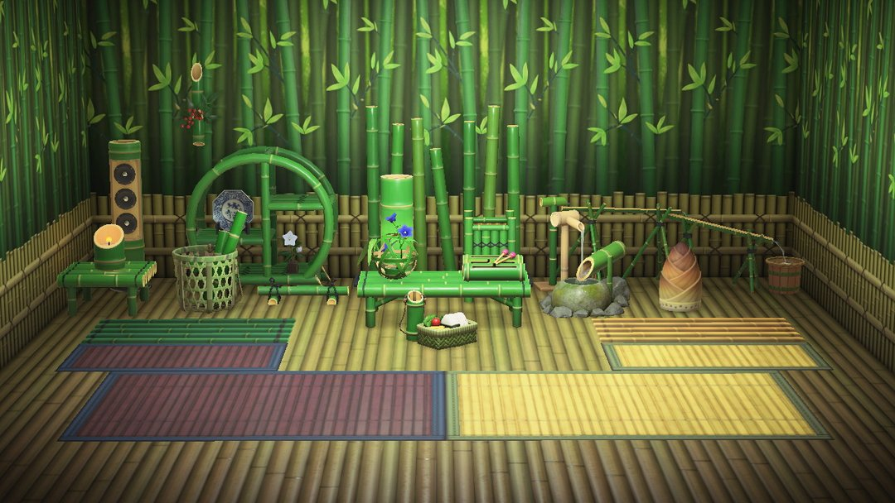

春筍季：2 月底到 5 月底，拿斧頭砍竹子
春筍怎麼砍、DIY方程式從哪來，12 份竹子家具的材料一張表
每到春天，島上的竹子會冒出嫩嫩的春筍。北半球是 2 月 25 日到 5 月 31 日，南半球是 8 月 25 日到 11 月 30 日，前後三個多月，在材料季裡算是時間充裕的，不用趕。
春筍可以拿來做一批竹子味很濃的家具：流水素麵、竹筍燈、蒸籠、竹林牆，還有能背在身上的後背架。這一季的DIY方程式一共 12 份，全做一遍要 62 個春筍。前提是島上得先有竹子，沒有的話第 2 節說怎麼弄來。

竹子長成一片，春天就有春筍可砍（圖：Nookipedia）
01什麼時候
日期以遊戲裡的時間為準。南半球的季節和北半球差半年，所以月份整體往後挪了 6 個月。
| 半球 | 開始 | 結束 |
| 北半球 | 2 月 25 日 | 5 月 31 日 |
| 南半球 | 8 月 25 日 | 11 月 30 日 |
櫻花季（北半球 4 月 1～10 日，南半球 10 月 1～10 日）剛好落在春筍季裡面。那 10 天島上同時有春筍可砍、櫻花花瓣可撈，兩樣都別漏掉。
02怎麼砍
拿斧頭去砍竹子。春筍季裡砍竹子，就能砍出春筍。春筍一個賣 200 鈴錢，賣掉不划算，留著做家具比較值得。
春筍在口袋裡一格能疊 30 個，砍多了先放進收納，口袋空出來再繼續砍。
島上沒有竹子怎麼辦
竹子不是每座島一開始就有的。搭飛機去神秘島時，有一種島上長滿了竹子，在竹子旁邊用鏟子挖出竹筍，帶回自己島上種下，就能長成竹子。
竹筍本身也是材料：這一季的竹林牆要 3 個、竹筍燈要 5 個。自己島上的竹子長好以後，旁邊也能挖到竹筍，記得留幾個。
小提示春筍能放進收納。季節快結束時多存一些收起來，過了季也能繼續做；這一季的DIY方程式沒學全也沒關係，以後學到了再拿出來用。
03DIY方程式從哪來
光有春筍還不夠，得先學會DIY方程式才做得出東西。來源有三個。
最主要的是射氣球。春筍季裡天上飄過的氣球，射下來會掉這一季的DIY方程式，一直掉到你把這一季的學全為止。季節有三個月，看到氣球就順手射下來，慢慢就齊了。
其次是季節第一天去服務處。北半球 2 月 25 日、南半球 8 月 25 日，狸克或西施惠會送你一份「流水素麵」。這一份只在第一天送，那天上線先進服務處繞一圈。
第三個是航平的遊船，見下面。
錯過了：搭航平的船去補
碼頭的航平每天能載你出海一次，收 1,000 Nook哩數。偶爾會開到停在某個季節的島上，竹子島就是其中一種，每種季節島的機率大約 3%。到了那座島，能砍到春筍，海邊的瓶中信裡也可能裝著這一季的DIY方程式。
機率不高，只能算碰運氣。還有一個前提：你自己的島上得先經歷過這個季節，才可能被帶到對應的島。把旅館第一間 VIP 客房布置好以後，航平每天還能多跑一趟（收 100 旅館券），遇到的機會也多一點。
0412 份DIY方程式一覽
| DIY方程式 | 材料 |
| 流水素麵 季節第一天服務處送 | 春筍 7、木材 3 |
| 竹筍燈 | 春筍 4、竹筍 5、黏土 4 |
| 蒸籠 | 春筍 6 |
| 竹製驚嚇箱 | 春筍 6 |
| 竹林牆 | 春筍 7、竹筍 3 |
| 淺色竹地毯 | 春筍 6 |
| 淺色竹子浴室地墊 2.0 加入 | 春筍 3 |
| 黃色竹子鋪墊 2.0 加入 | 春筍 3 |
| 綠色落葉 | 春筍 1、雜草 10 |
| 後背架 | 春筍 6 |
| 竹棒 | 春筍 6、星星碎片 3 |
| 排笛 | 春筍 7 |
12 份全做一遍，一共要春筍 62 個、竹筍 8 個、雜草 10 個、黏土 4 個、木材 3 個、星星碎片 3 個。
05先做哪幾件
流水素麵：第一天送的那份，一條 3 格長的竹槽，擺在院子裡很有日式庭園的味道。
竹筍燈：要春筍 4、竹筍 5、黏土 4，竹筍得自己去挖，比別的多一道工序，趁春筍季早點做出來。
後背架：能背在身上的包，春筍 6 個就夠，春天出門背著正應景。
竹棒：這一季的魔法棒，揮一下能換上事先登記好的整套衣服，另外要 3 個星星碎片。
三件竹子地墊（淺色竹地毯、淺色竹子浴室地墊、黃色竹子鋪墊）用料都少，鋪在屋裡、院子裡都合適。

竹子系列家具布置的房間（圖：Nookipedia）
06版本變化
淺色竹子浴室地墊、黃色竹子鋪墊這兩份DIY方程式是 2.0 加入的。航平出海是 2.0 加入的；布置好旅館第一間 VIP 客房後航平每天多跑一趟，是 3.0 加入的。
動森圈圈 · iOS App 和微信小程式都搜「動森圈圈」